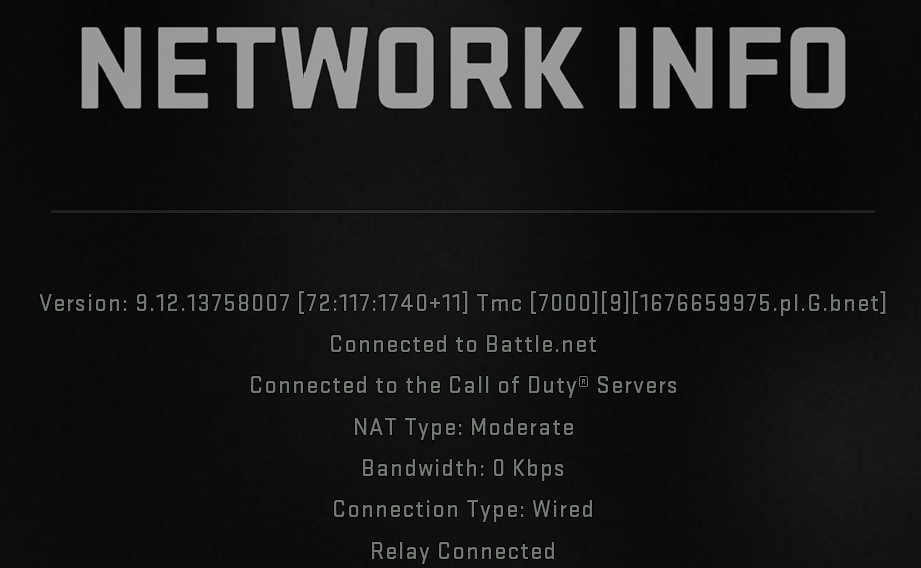
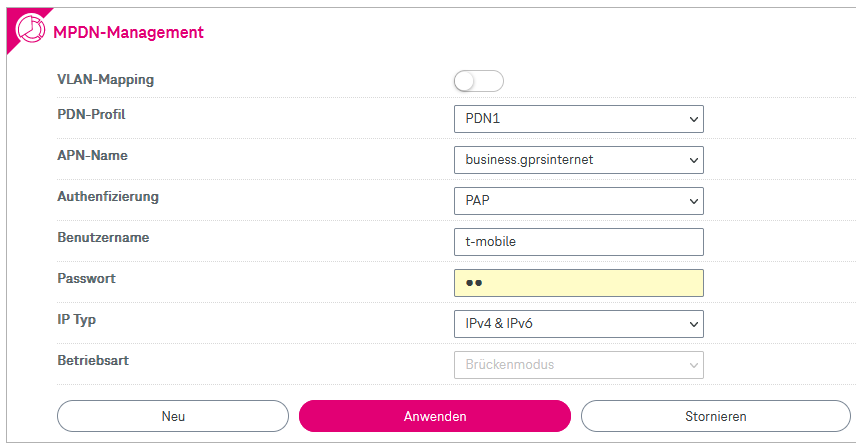
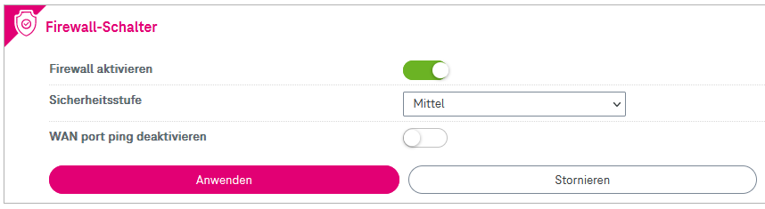
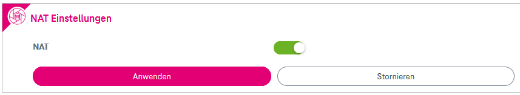
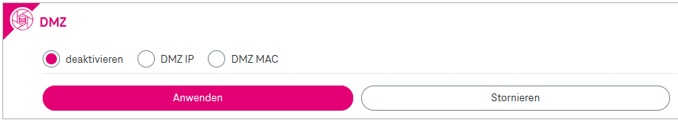

Bin neu hier, seit ca. zwei Wochen Magenta Kunde und habe mich für die 5G Box Outdoor entschieden.
Ich bin sehr zufrieden mit der Leistung und der Verarbeitung der Box aber es gibt eine Sache wo ich einfach nicht weiter komme, nämlich mit meiner Xbox.
Egal was ich versuche, egal wieviele Tutorials ich mir ansehe und ausprobiere, ich schaffe es einfach nicht den NAT-Typ zu änder. Er ist und bleibt auf der xbox immer aus Strikt.
Ich kenn mich da auch nicht besonders gut aus mit, ich versuche mich bei diesem thema etwas schlau zu macher und es dann ausprobieren, aber ich steh gerade voll an der wand.
Mein Problem…
es gibt zwei zugangsmöglichkeiten,
1. die Außeneinheit (mit der SIM Karte)
2. die Inneneinheit, (W-Lan Router)
Bei beiden kann ich mich einloggen und Einstellungen ändern.
Wenn ich am W-Lan Router die Port-Weiterleitung einstelle, muss ich laut Xbox 7 Ports eintragen, und bei Port 53 (UDP und TCP)
habe ich plötzlich keine Internetleistung mehr.
APN / NAT ändern habe ich auch schon versucht, klappt nicht.
Eigene Xbox IP festgelegt, klappt auch nicht.
DMZ klappt auch nicht.
Upnp in der Einstellung ist Angehakt aber auf der Xbox steht,
„upnp nicht erfolgreich“
Vielleicht hat von euch schon jemand Erfahrung mit der 5G Box Outdoor und kann mir bei meinem Problem helfen?
Welche IP-Adresse bekommt die Outdoor- und die Indoor-Einheit? Dies ist jeweils auf der Startseite der Geräte nach dem Einloggen sichtbar. Die ersten zwei bis drei Zahlen reichen.
Hast du nach dem Ändern des APN beide Geräte mal neu gestartet?
Welche IP-Adresse bekommt die Outdoor- und die Indoor-Einheit? Dies ist jeweils auf der Startseite der Geräte nach dem Einloggen sichtbar. Die ersten zwei bis drei Zahlen reichen.
Hast du nach dem Ändern des APN beide Geräte mal neu gestartet?
LG NTM
Hey NTM,
wenn ich versuchen den APN auf business.gprsinternet zu ändern (wie in der Anleitung beschrieben) und beide Geräte neustarte habe ich plötzlich kein internet mehr.
(Weil es angeblich auf mobilem internet erst freigeschalten werden muss? 🤔)
UPNP geht auch nicht…NAT-STRIKT
Auf dem Gerät (Außen) kann ich einen Virtuellen Server erstellen mit Port-Weiterleitung…alles eingetippt…Neustart.
NAT-STRIKT
Auf dem W-Lan Router (Innen) kann ich auch Ports weiterleiten…alles eingetippt…Neustart.
NAT-STRIKT
Habe heute mit einer Mitarbeiterin vom Technischen Service gesprochen, da die 5G Box Outdoor ein Mobiles Internet ist, müsse Sie mir IPv4 Freischalten (für 5€ zusätzliche kosten im Monat). Ich schätze mal, damit meinte Sie die APN business.gprsinternet Einstellung
und es sollte in einer Stunde alles funktionieren.
Habe seit zwei tagen leider keine info bekommen und NAT ist noch immer Strikt.
Leider bin ich Negativ begeistert da mir keiner von Magenta helfen kann.
NTM
vor einer Stunde schrieb Mirko94:
Habe heute mit einer Mitarbeiterin vom Technischen Service gesprochen, da die 5G Box Outdoor ein Mobiles Internet ist, müsse Sie mir IPv4 Freischalten (für 5€ zusätzliche kosten im Monat). Ich schätze mal, damit meinte Sie die APN business.gprsinternet Einstellung
und es sollte in einer Stunde alles funktionieren.
Der Business APN braucht keine Freischaltung und ist kostenlos selbst einstellbar. Der Business APN ist dazu da, um dynamische öffentliche IPv4 Adressen zu vergeben. Jeder Anschluss muss eine dynamische öffentliche IP-Adresse kostenlos bekommen.
Ich denke dir wurde eine statische IP-Adresse verkauft, welche für einen anderen NAT Typ nicht benötigt wird.
Und war das Telefonat nun heute (Donnerstag) oder vor zwei Tagen?.
Das wichtigeste wäre eine öffentliche IP Adresse zum Laufen zu bringen. Ohne diese geht es nicht.
Welche Authentifizierung hast du beim APN eigentlich ausgewählt?
Stef_88
Am 24.12.2021 um 01:11 schrieb NTM:
Der Business APN braucht keine Freischaltung und ist kostenlos selbst einstellbar. Der Business APN ist dazu da, um dynamische öffentliche IPv4 Adressen zu vergeben. Jeder Anschluss muss eine dynamische öffentliche IP-Adresse kostenlos bekommen.
Ich denke dir wurde eine statische IP-Adresse verkauft, welche für einen anderen NAT Typ nicht benötigt wird.
Und war das Telefonat nun heute (Donnerstag) oder vor zwei Tagen?.
Das wichtigeste wäre eine öffentliche IP Adresse zum Laufen zu bringen. Ohne diese geht es nicht.
Welche Authentifizierung hast du beim APN eigentlich ausgewählt?
Hallo,
habe das gleiche Problem wie Mirko94.
APN habe ich auf business umgestellt und bei Authentifizierung habe ich Auto ausgewählt.
bisher leider noch nicht, vielleicht kann uns
@NTM
helfen?
NTM
Ich habe derzeit keine 5G Box Outdoor und kann daher für den folgenden Text nur auf die Bedienungsanleitungen, welche Magenta veröffentlicht hat, die spärlichen Erfahrungen, welche es hier im Forum gibt, und meine Erfahrungen mit anderen Produkten zurückgreifen.
In dem folgenden Text ist das 5G Modem für draußen als ODU (Outdoor Unit) und der Router für drinnen als IDU (Indoor Unit) abgekürzt.
Mein erster Gedanke wäre auf der ODU unter Einstellungen -> Einwahl -> MPDN Management (siehe Punkt 8.2.1.2 in der Anleitung) ein neues Profil mit den Business APN einzurichten (APN: "business.gprsinternet", Authentifizierung: "PAP", Benutzername: "t-mobile", Passwort: "tm", IP Typ: "IPv4") mit der MPDN Betriebsrat Bridge/Modem (oder so) statt Router. Dann würde die ODU nur als Modem fungieren und die IDU eine öffentliche IP-Adresse erhalten sowie als einziger Router im Heimnetzwerk arbeiten. Zusätzlich bei der IDU unter Einstellungen -> Sicherheit -> UPnP die UPnP Funktion aktivieren (siehe Punkt 5.3.6 in der Anleitung).
Alternativ zum ersten Ansatz könnte bei der ODU unter Einstellungen -> Einwahl -> MPDN Management ein neues MPDN Profil angelegt werden mit dem Business APN, aber die MPDN Betriebsart auf Router zu lassen. Dann unter Einstellungen -> LAN den DHCP Server einschalten (siehe Punkt 8.2.2 in der Anleitung), falls dieser nicht aktiv ist (sollte aber denke ich). Wenn der DHCP Server aktiv ist sollte es den Punkt Reservierte IP geben. Hier mit der MAC Adresse der IDU (sollte auf der Unterseite der IDU stehen) eine neue Reservierung mit einer IP-Adresse aus dem Bereich von 192.168.0.2 bis 192.168.0.254 anlegen (am besten die IP-Adresse, welche die IDU derzeit hat, sollte am Dashboard der IDU stehen). Dann auf der ODU unter (ich vermute) Einstellungen -> Sicherheit -> DMZ die IP-Adresse, welche der IDU zugeteilt wurde, hier in die DMZ Eintragen (siehe Punkt 8.2.4.2 in der Anleitung). Damit arbeitet die ODU und die IDU als Router und die ODU bekommt die öffentliche IP-Adresse. Zusätzlich bei der IDU unter Einstellungen -> Sicherheit -> UPnP die UPnP Funktion aktivieren (siehe Punkt 5.3.6 in der Anleitung).
Sollte UPnP nicht funktionieren, kann die Konsole auf der IDU in die DMZ gegeben werden (siehe Punkt 5.3.5 in der Anleitung). Wobei dies nicht zu empfehlen ist, sondern eher auf genaue Portweiterleitungen gesetzt werden sollte. Aber zum Testen kann es temporär eingesetzt werden.
Leider hatte ich auch die Fragen an den Threadersteller gestellt, damit ich das System besser verstehen kann. Diese Fragen wurden von ihm, aber leider bis auch von euch anderen, bisher nicht beantwortet. Also bevor ihr irgendetwas ändert, wäre es sehr nett, wenn ihr diese Frage beantworten könntet.
Am 10.12.2021 um 13:57 schrieb NTM:
Welche IP-Adresse bekommt die Outdoor- und die Indoor-Einheit? Dies ist jeweils auf der Startseite der Geräte nach dem Einloggen sichtbar. Die ersten zwei bis drei Zahlen reichen.
Ich habe auch eine Idee in folgendem Beitrag niedergeschrieben, aber kein Feedback vom Themenersteller damals erhalten, wie solche Probleme weiter eingrenzbar wären:
7455-nat-typ-von-3-auf-2-ändern/#comment-46013
In diesem Fall würde es im ersten Schritt am besten so sein, dass die ODU direkt, also ohne die IDU dazwischen, an einen Computer angeschlossen wird. Dazu eine der beiden MPDN Profilkonfigurationen wie oben beschrieben. Bei ersterer MPDN Profil-Variante, sollte der PC direkt die öffentliche IP-Adresse bekommen (dies sollte nur für kurze Testes und nicht für den Dauerbetrieb genutzt werden. In diesem Fall wäre die Portweiterleitung für den Test von draußen, wie in dem Beitrag beschrieben, nicht nötig. Wenn die zweite Variante gewählt wird, sollte auf der ODU vorher überprüft werden, ob der DHCP Server eingeschalten ist. Außerdem muss eine Portweiterleitung für den Server eingerichtet werden. Diese wäre über die Virtual Server Funktion der ODU zu realisieren (siehe Punkt 8.2.4.3 in der Anleitung). Laut
diesem Beitrag
müsstet ihr die ODU längere Zeit stromlos machen (oder vielleicht einfach das Lan Kabel zur ODU aus dem PoE Injektor ausstecken), damit ein anderes Gerät, als die IDU, erfolgreich eine IP-Adresse von der ODU bekommt. Beim Zurückwechseln zur IDU wäre es dasselbe Spiel.
Ich muss generell anmerken, dass es in letzter Zeit sehr sehr viele Anfragen zu NAT Typ, Portweiterleitung, öffentliche IP gibt, was mich auch etwas stutzig macht. Könnte aber auch wegen Weihnachten sein? Wobei dieses Jahr kommt es mir mehr vor.
Bearbeitet
von NTM
Stef_88
Am 25.1.2022 um 21:28 schrieb NTM:
Mein erster Gedanke wäre auf der ODU unter Einstellungen -> Einwahl -> MPDN Management (siehe Punkt 8.2.1.2 in der Anleitung) ein neues Profil mit den Business APN einzurichten (APN: "business.gprsinternet", Authentifizierung: "PAP", Benutzername: "t-mobile", Passwort: "tm", IP Typ: "IPv4") mit der MPDN Betriebsrat Bridge/Modem (oder so) statt Router. Dann würde die ODU nur als Modem fungieren und die IDU eine öffentliche IP-Adresse erhalten sowie als einziger Router im Heimnetzwerk arbeiten. Zusätzlich bei der IDU unter Einstellungen -> Sicherheit -> UPnP die UPnP Funktion aktivieren (siehe Punkt 5.3.6 in der Anleitung).
Welche IP-Adresse bekommt die Outdoor- und die Indoor-Einheit? Dies ist jeweils auf der Startseite der Geräte nach dem Einloggen sichtbar. Die ersten zwei bis drei Zahlen reichen.
Hast du nach dem Ändern des APN beide Geräte mal neu gestartet?
LG NTM
Hallo. Also ich bin am verzweifeln. Es will bei mir einfach nicht funktionieren.. ich bin deine Anleitungen durch gegangen und habs versucht, aber es klappt nicht. Nach wie vor NAT 3 bei der Ps5.
Beim MPDN - Management kann ich alles nach deiner Beschreibung ändern nur die Betriebsart ist grau unterlegt, kann ich nicht ändern. Ist bei mir im routermodus, mach ich ein neues PDN Profil, is Brückenmodus drinnen und grau hinterlegt.
Zu deiner Frage welche IP Adressen angezeigt werden im Dashboard:
Indoor Einheit: IPv4: 192.XX
Outdoor Einheit: IPv4: 46.XX
Hilft dir das etwas?
Ich habe im Haus noch ein Modem über DSL laufen, da ich diese 5g Geschichte nur austesten, kann es daran liegen das sich da nichts ändert am NAT?
Danke für die Hilfe.
Lg
Bearbeitet
von Isak
NTM
vor 5 Stunden schrieb Isak:
Ist bei mir im routermodus, mach ich ein neues PDN Profil, is Brückenmodus drinnen und grau hinterlegt.
Das wäre dann der von mir angesprochene Bridge Modus nur halt auf Deutsch geschrieben statt Englisch.
Und was ist, wenn du das neue Profil mit den Daten des Business APN ausfüllst, und das Profil anwendest? Vielleicht beide Geräte danach mal neu starten.
vor 5 Stunden schrieb Isak:
Zu deiner Frage welche IP Adressen angezeigt werden im Dashboard:
Indoor Einheit: IPv4: 192.168.0.11
Outdoor Einheit: IPv4: 46.124.184.39
Hilft dir das etwas?
Dies zeigt eben, dass die öffentliche IP standardmäßig am Outdoor Modem anliegt und nicht an der Indoor-Einheit. Nachdem
@Stef_88
meint meine Anleitung hat funktioniert, habe mir dies bereits gedacht. Hätte
@Stef_88
noch etwas zu meiner Anleitung hinzuzufügen, wäre dies gern gesehen.
vor 5 Stunden schrieb Isak:
Ich habe im Haus noch ein Modem über DSL laufen, da ich diese 5g Geschichte nur austesten, kann es daran liegen das sich da nichts ändert am NAT?
Sollte das DSL Modem nicht irgendwie an das 5G Set angeschlossen worden sein, sollte es diesbezüglich keine Beeinflussungen geben.
Die PS5 ist sicher mit der Indoor Einheit des 5G Set verbunden?
Bearbeitet
von NTM
Isak
Danke für die schnelle Antwort.
Wenn ich das neue Profil anlege und auf anwenden geh, habe ich 120sec zu warten und dann startet das Programm neu, zusätzlich hab ich auch beide Einheiten neu gestartet ja. Steig ich dann wieder ins Programm der Outdoor Einheit ein, zeigt er mir wieder das ursprüngliche Profil.
Verbunden ist das DSL Modem mit dem 5G Router nicht nein.
Die PS5 hab ich mit einem LAN Kabel an der Indoor Einheit verbunden ja.
Ich glaub ich bin einfach zu blöd dafür und irgendwas mach ich nachwievor falsch 😅
Hab auch mit Magenta telefoniert, die meinten sie schicken mir eine Anleitung für die Business APN zu, da wart ich aber auch schon länger drauf und die wird nichts anderes sein wie deine ausführliche Erklärung schätze ich.
Stef_88
vor 12 Stunden schrieb NTM:
vor 12 Stunden schrieb Isak:
Zu deiner Frage welche IP Adressen angezeigt werden im Dashboard:
Indoor Einheit: IPv4: 192.168.0.11
Outdoor Einheit: IPv4: 46.124.184.39
Hilft dir das etwas?
Dies zeigt eben, dass die öffentliche IP standardmäßig am Outdoor Modem anliegt und nicht an der Indoor-Einheit. Nachdem
@Stef_88
meint meine Anleitung hat funktioniert, habe mir dies bereits gedacht. Hätte
@Stef_88
noch etwas zu meiner Anleitung hinzuzufügen, wäre dies gern gesehen.
Hallo
@NTM
bei mir hat, wie von dir vermutet, die ODU de öffentliche IP (46.xx).
Nach dem Neustart der IDU und ODU habe ich an der PS4 die Netzwerkeinstellungen neu konfiguriert (alles auf Standard, kein DMZ, etc.,) und dann hatte ich NAT-Typ 2.
ich schaue auch bei jedem Start der PS4 sicherheitshalber nach, ob der NAT Typ noch passt und konnte bisher nichts gegenteiliges feststellen.
Isak
vor 2 Stunden schrieb Stef_88:
Hallo
@NTM
bei mir hat, wie von dir vermutet, die ODU de öffentliche IP (46.xx).
Nach dem Neustart der IDU und ODU habe ich an der PS4 die Netzwerkeinstellungen neu konfiguriert (alles auf Standard, kein DMZ, etc.,) und dann hatte ich NAT-Typ 2.
ich schaue auch bei jedem Start der PS4 sicherheitshalber nach, ob der NAT Typ noch passt und konnte bisher nichts gegenteiliges feststellen.
Hallo
@Stef_88
Neustart im Programm gewählt oder vom Strom nehmen die Geräte? Ich werds dann heut abend auch noch einmal probieren 😅 bei der ps4 hast dann quasi automatisch verbunden und nicht auf manuell?
Lg
Stef_88
Hallo
@Isak
, ich hab beide Einheiten im Programm neu gestartet, in der Zwischenzeit aber auch schon mal vom Strom nehmen müssen, trotzdem habe ich noch immer NAT 2.
Bei den Verbindungseinstellungen habe ich automatisch ausgewählt und die PS4 den Job machen lasen
Isak
Am 30.1.2022 um 18:23 schrieb NTM:
Das wäre dann der von mir angesprochene Bridge Modus nur halt auf Deutsch geschrieben statt Englisch.
Und was ist, wenn du das neue Profil mit den Daten des Business APN ausfüllst, und das Profil anwendest? Vielleicht beide Geräte danach mal neu starten.
Dies zeigt eben, dass die öffentliche IP standardmäßig am Outdoor Modem anliegt und nicht an der Indoor-Einheit. Nachdem
@Stef_88
meint meine Anleitung hat funktioniert, habe mir dies bereits gedacht. Hätte
@Stef_88
noch etwas zu meiner Anleitung hinzuzufügen, wäre dies gern gesehen.
Sollte das DSL Modem nicht irgendwie an das 5G Set angeschlossen worden sein, sollte es diesbezüglich keine Beeinflussungen geben.
Die PS5 ist sicher mit der Indoor Einheit des 5G Set verbunden?
Bei mir liegts sicher daran dass ich neues Profil anlege - PDN2 - mit den ganzen Daten, dann auf anwenden gehe, nach 120 sec kommt Neustart, ich log mich wieder ein, und es is wieder das PDN1 drin...
frank_the_crank
vor 17 Stunden schrieb Isak:
Bei mir liegts sicher daran dass ich neues Profil anlege - PDN2 - mit den ganzen Daten, dann auf anwenden gehe, nach 120 sec kommt Neustart, ich log mich wieder ein, und es is wieder das PDN1 drin...
hey, ich klink mich jetzt auch schnell mal ein, und ich hab das selbe problem, auch Nat Typ 3 bei der Playstation 5, und genau wie bei dir, wechselt nach nem neustart das ganze wieder auf PDN1 obwohl ich vorher ein neues Profil erstellt hab.
edit//
ich hab zum testen sowohl die outdoorf box als auch das ZTE 5G Modem daheim, ich hab zwei verträge abgeschlossen und werde von einem zurücktreten,
jedoch habe ich es soeben geschafft beim ZTE MC801A ein Business APN anzulegen, das tatsächlich funktioniert und mir zumindest den NAT Typ 2 auf der PS5 ermöglicht, mit dem ich auf der PS4 bei einem anderen Provider nie Probleme beim Onlinegaming hatte...
jedoch würde ich es nach wie vor gerne noch bei der Outdoor Box schaffen, weil sie mir doch auch zusätzlich mehr Speed liefert, als der Router der im Hauseck steht.
Bearbeitet
von frank_the_crank
Isak
vor 39 Minuten schrieb frank_the_crank:
hey, ich klink mich jetzt auch schnell mal ein, und ich hab das selbe problem, auch Nat Typ 3 bei der Playstation 5, und genau wie bei dir, wechselt nach nem neustart das ganze wieder auf PDN1 obwohl ich vorher ein neues Profil erstellt hab.
edit//
ich hab zum testen sowohl die outdoorf box als auch das ZTE 5G Modem daheim, ich hab zwei verträge abgeschlossen und werde von einem zurücktreten,
jedoch habe ich es soeben geschafft beim ZTE MC801A ein Business APN anzulegen, das tatsächlich funktioniert und mir zumindest den NAT Typ 2 auf der PS5 ermöglicht, mit dem ich auf der PS4 bei einem anderen Provider nie Probleme beim Onlinegaming hatte...
jedoch würde ich es nach wie vor gerne noch bei der Outdoor Box schaffen, weil sie mir doch auch zusätzlich mehr Speed liefert, als der Router der im Hauseck steht.
Hallo
@frank_the_crank
hab heute mit jemanden telefoniert. Das Ding ist, dass man diesen Router nicht auf brückenmodus stellen kann, daher übernimmt er dir nicht das PDN2 Profil.. Die andere Möglichkeit ist jetz noch, so wie
@NTM
es in seiner langen Beschreibung geschrieben hat, die "Alternative" zu probieren. Das werde ich heute Abend versuchen. Sollte es geklappt haben, gib bitte bescheid. Liebe Grüße
NTM
Du könntest auch noch diesen Tipp versuchen mit dem Bridge Mode:
Für diejenigen, welche sich mit dem Manipulieren von HTML Code einer geladenen Seite nicht auskennen:
In Edge, Chrome oder Firefox die Seite mit der Profilverwaltung aufrufen, dann rechts klicken und aus der Liste, welche erscheint, den Punkt "Untersuchen" auswählen (letzter Eintrag). Dann Strg + F drücken, den folgenden Text einfügen und mit Enter bestätigen:
Dann auf Disabled doppelt klicken, damit der Text bearbeitbar wird. Nun den folgenden Text entfernen und mit Enter bestätigen:
Zitat
disabled=""
Damit sollte die Auswahl für Routermodus oder Brückenmodus aktiv werden für den Standard APN. Dann noch die restlichen Werte auf den Business APN ändern und die Änderungen Anwenden.
Versuche dies noch bitte, bevor du auf die zweite Variante zurückgreifst.
Am 1.2.2022 um 15:07 schrieb Isak:
Das Ding ist, dass man diesen Router nicht auf brückenmodus stellen kann, daher übernimmt er dir nicht das PDN2 Profil.
Es ist aber komisch, warum es bei manchen Geräten wohl funktioniert, aber bei anderen nicht.
Bearbeitet
von NTM
Isak
vor 5 Stunden schrieb NTM:
In Edge, Chrome oder Firefox die Seite mit der Profilverwaltung aufrufen
Bei mir scheiterts hier schon die Seite mit der Profilverwaltung aufzurufen
Isak
vor 25 Minuten schrieb Isak:
Bei mir scheiterts hier schon die Seite mit der Profilverwaltung aufzurufen
Ich habs geschafft
ich hab bei der PS5 auch NAT Typ 2 jetzt. Dafür jetzt fast keine Geschwindigkeit mehr, bei der Indoor Einheit blinkt jetzt oft die WAN Led, haha. Muss die Indoor Einheit von draußen guten Empfang bekommen? Die steht bei mir im Keller, da dort mein Gaming Raum ist.
serious_mp
Für alle die es interessiert, weil mich das einige Stunden gekostet hat:
1. ich habe den wlan router weggelassen und betreibe nur mehr die outdoorbox nachdem beide Geräte meinten DHCP spielen zu müssen und ich ohnehin genug APs habe
2. banal aber wichtig, bei der Outdoorbox meldet man sich mit http
s
://192.168.0.1 an
3. meine APN einstellungen (in dem Fall für statische IPs):
Für diejenigen, welche sich mit dem Manipulieren von HTML Code einer geladenen Seite nicht auskennen:
In Edge, Chrome oder Firefox die Seite mit der Profilverwaltung aufrufen, dann rechts klicken und aus der Liste, welche erscheint, den Punkt "Untersuchen" auswählen (letzter Eintrag). Dann Strg + F drücken, den folgenden Text einfügen und mit Enter bestätigen:
Dann auf Disabled doppelt klicken, damit der Test bearbeitbar wird. Nun den folgenden Text entfernen und mit Enter bestätigen:
Damit sollte die Auswahl für Routermodus oder Brückenmodus aktiv werden für den Standard APN. Dann noch die restlichen Werte auf den Business APN ändern und die Änderungen Anwenden.
Versuche dies noch bitte, bevor du auf die zweite Variante zurückgreifst.
Es ist aber komisch, warum es bei manchen Geräten wohl funktioniert, aber bei anderen nicht.
@NTM
Hallo auch von meiner Seite. Auch ich habe das Problem, dass ich bei der PS4 nur NAT Typ 3 habe. Ich habe auch nach dieser Methode vorgehen müssen, da er mir keinen PDN2 mit Brückenmodus anwenden wollte. Nach manipulieren des HTML Codes hat’s dann bei PDN1 mit dem ändern auf Brückenmodus auch funktioniert. Die Werte habe ich wie oben beschrieben eingegeben. Siehe da, es hat funktioniert, ich hatte NAT Typ 2 bei der PS4. Jedoch unterbrach die WAN Verbindung ständig zwischen der IDU und ODU alle paar Sekunden, sprich die WAN LED blinkte alle paar Sekunden und ich hatte keine Internetverbindung. Es ging dann sogar soweit, dass ich die ODU auf Werkseinstellungen zurücksetzen musste, da ich nicht einmal mehr mit der direkten LAN Verbindung zum Laptop auf die ODU zugreifen konnte. Die ODU und der Laptop konnten keine Verbindung mehr aufbauen, damit ich mit der IP Adresse der ODU auf die Einstellungen zugreifen konnte. Hast du bzw. ihr eine Idee was hier das Problem sein könnte?
Vielen Dank im Voraus.
Bearbeitet
von Rafael
Isak
Am besten zurückgeben und warten bis ein brauchbares Produkt am Markt ist.
Liebe Grüße
Rafael
Am 1.2.2022 um 21:10 schrieb Isak:
Ich habs geschafft
ich hab bei der PS5 auch NAT Typ 2 jetzt. Dafür jetzt fast keine Geschwindigkeit mehr, bei der Indoor Einheit blinkt jetzt oft die WAN Led, haha. Muss die Indoor Einheit von draußen guten Empfang bekommen? Die steht bei mir im Keller, da dort mein Gaming Raum ist.
@Isak
Du hattest ja auch geschrieben das die WAN LED ständig geleuchtet hat, hast du trotzdem eine Verbindung zum Internet gehabt? Funktioniert es bei dir jetzt normal?
Bei mir hat sie für ein paar Sekunden geleuchtet und dann hat die WAN LED wieder auf Blinken umgeschaltet und das in einer Endlosschleife. In der Blinkphase hatte ich auch keine Internetverbindung.
Ist bei euch der VLAN Button aktiviert, hängst das vielleicht auch zusammen, dass dieser bei mir deaktiviert ist?
Ich habe den Router zurückgegeben, da es nicht funktioniert hat und auch der KundenService von Magenta gemeint hat, da kann ma nichts machen an der Problematik..
Liebe Grüße
Mirko94
Hallo Leute,
Bin neu hier, seit ca. zwei Wochen Magenta Kunde und habe mich für die 5G Box Outdoor entschieden.
Ich bin sehr zufrieden mit der Leistung und der Verarbeitung der Box aber es gibt eine Sache wo ich einfach nicht weiter komme, nämlich mit meiner Xbox.
Egal was ich versuche, egal wieviele Tutorials ich mir ansehe und ausprobiere, ich schaffe es einfach nicht den NAT-Typ zu änder. Er ist und bleibt auf der xbox immer aus Strikt.
Ich kenn mich da auch nicht besonders gut aus mit, ich versuche mich bei diesem thema etwas schlau zu macher und es dann ausprobieren, aber ich steh gerade voll an der wand.
Mein Problem…
es gibt zwei zugangsmöglichkeiten,
1. die Außeneinheit (mit der SIM Karte)
2. die Inneneinheit, (W-Lan Router)
Bei beiden kann ich mich einloggen und Einstellungen ändern.
Wenn ich am W-Lan Router die Port-Weiterleitung einstelle, muss ich laut Xbox 7 Ports eintragen, und bei Port 53 (UDP und TCP)
habe ich plötzlich keine Internetleistung mehr.
APN / NAT ändern habe ich auch schon versucht, klappt nicht.
Eigene Xbox IP festgelegt, klappt auch nicht.
DMZ klappt auch nicht.
Upnp in der Einstellung ist Angehakt aber auf der Xbox steht,
„upnp nicht erfolgreich“
Vielleicht hat von euch schon jemand Erfahrung mit der 5G Box Outdoor und kann mir bei meinem Problem helfen?
NTM
Hey
@Rafael
Wie es der Zufall so will, habe ich derzeit eine 5G Box Outdoor zum Ausprobieren bei mir.
Stelle die ODU mal wieder in den Router Modus, aber schalte die Firewall der ODU aus (zu finden unter "Einstellungen" -> "Sicherheit" -> "Firewall-Schalter").
Ich bin diesbezüglich noch nicht fertig mit dem Testen, aber mal als Anhaltpunkt.
LG NTM
Edit: Ja das war es, genaue Anleitung folgt in Kürze (bis spätestens morgen).
Bearbeitet
von NTM
NTM
Hier ist nun eine Anleitung, wie der NAT Typ bei Spielekonsolen, mit der Magenta 5G Box Outdoor tatsächlich geändert werden kann, ohne dass Probleme auftreten sollten:
Bitte Ausprobieren und Feedback unter dem Beitrag hinterlassen.
bockigeshortkind
Hi,
@Rafael
ich hatte auch Probleme mit der Magenta IDU (WAN LED blinkt, Internet weg bzw. keine Geschwindigkeit), wenn in der ODU der Bridge-Modus aktiviert wurde (mittels Trick 'disabled' entfernen per Browser Entwicklertools).
Die IDU habe ich nun mit einer Fritzbox 4060 ersetzt, Firewall an der ODU komplett mittels Schieberegler ausgeschaltet -> auch hier dauert das übernehmen der Einstellung mehrere Minuten (Internet weg), auch wenn nicht angezeigt wird, dass neugestartet wird.
Damit funktionieren die Portfreigaben (z.B. 80, 443, 8443), dyndns (no-ip) und myfritz dyndns (inkl. letsencrypt) der Fritzbox wie gewünscht.
Bridge Mode und Firewall komplett deaktiviert scheinen wirklich alles durchzureichen.
Warum die IDU mit diesen Einstellungen allerdings so unzuverlässig funktioniert, sollte wahrscheinlich von Magenta geprüft werden.
wie hast die die firewall deaktiviert an der outdoor box? habe das gleiche problem wie alle hier habe auch ne fritzbox jetzt angeschlossen die 6890 aber nat typ strikt trotz alle freigaben spiele am pc zumindest bei call of duty steht nat typ strikt
An der ODU habe ich auch die Regler für NAT, DMZ, Virtual Server (Portfreigaben) deaktiviert, analog Firewall Schalter.
Und wie gesagt der Bridge Mode ist aktiv.
Hast noch am PC irgendeine spezielle Firewall?
Nat in Warzone 2 (PC) - moderat:

Ich habe an der Fritzbox keine weiteren Freigaben für den Spiele PC eingestellt.
LG
Rafael
Am 11.2.2023 um 02:49 schrieb bockigeshortkind:
Hi,
@Rafael
ich hatte auch Probleme mit der Magenta IDU (WAN LED blinkt, Internet weg bzw. keine Geschwindigkeit), wenn in der ODU der Bridge-Modus aktiviert wurde (mittels Trick 'disabled' entfernen per Browser Entwicklertools).
Die IDU habe ich nun mit einer Fritzbox 4060 ersetzt, Firewall an der ODU komplett mittels Schieberegler ausgeschaltet -> auch hier dauert das übernehmen der Einstellung mehrere Minuten (Internet weg), auch wenn nicht angezeigt wird, dass neugestartet wird.
Damit funktionieren die Portfreigaben (z.B. 80, 443, 8443), dyndns (no-ip) und myfritz dyndns (inkl. letsencrypt) der Fritzbox wie gewünscht.
Bridge Mode und Firewall komplett deaktiviert scheinen wirklich alles durchzureichen.
Warum die IDU mit diesen Einstellungen allerdings so unzuverlässig funktioniert, sollte wahrscheinlich von Magenta geprüft werden.
=> Und siehe da, es funktioniert, ich habe die ODU auf Bridge Mode, Firewall auf Mittel und keine DMZ aktivieren müssen und den Rest auf Werkseinstellung gelassen. Eigentlich habe ich alles auf Werkseinstellung belassen und nur auf Bridge Mode und Business APN umgestellt.




So bekommt meine an der ODU angeschlossene FritzBox 4060 wunderbar eine öffentliche IP und meine PS4 zeigt NAT Typ Moderat an. Die Kombi läuft bei mir bereits seit September 2022 ohne Probleme mit dem neuen gleichen POE-Injektor.
=> Und siehe da, es funktioniert, ich habe die ODU auf Bridge Mode, Firewall auf Mittel und keine DMZ aktivieren müssen und den Rest auf Werkseinstellung gelassen. Eigentlich habe ich alles auf Werkseinstellung belassen und nur auf Bridge Mode und Business APN umgestellt.
So bekommt meine an der ODU angeschlossene FritzBox 4060 wunderbar eine öffentliche IP und meine PS4 zeigt NAT Typ Moderat an. Die Kombi läuft bei mir bereits seit September 2022 ohne Probleme mit dem neuen gleichen POE-Injektor.
Jetzt muss ich nur noch probieren ob DynDns funktioniert.
Knudowatz
Habe jetzt allerdings auch das Problem, dass das Internet nur sporadisch funktioniert und die WAN Led blinkt.
Kann ich statt einer Fritzbox auch meinen Netgear Router verwenden?
NTM
vor 14 Stunden schrieb Knudowatz:
Kann ich statt einer Fritzbox auch meinen Netgear Router verwenden?
Grundsätzlich ja
vor 14 Stunden schrieb Knudowatz:
Habe jetzt allerdings auch das Problem, dass das Internet nur sporadisch funktioniert und die WAN Led blinkt.
Versuche mal auf der Fritz!Box oder dem Netgear einen anderen DNS Server zu konfigurieren um den DNS Server in der Outdoor Einheit zu umgehen (wie 1.1.1.1 und 1.0.0.1 vom Cloudflare, 8.8.8.8 und 8.8.4.4 von Google, 9.9.9.9 von IBM). Der DNS-Server in der Outdoor-Einheit dürfte nämlich nicht der beste sein.
Knudowatz
vor 18 Stunden schrieb NTM:
Grundsätzlich ja
Versuche mal auf der Fritz!Box oder dem Netgear einen anderen DNS Server zu konfigurieren um den DNS Server in der Outdoor Einheit zu umgehen (wie 1.1.1.1 und 1.0.0.1 vom Cloudflare, 8.8.8.8 und 8.8.4.4 von Google, 9.9.9.9 von IBM). Der DNS-Server in der Outdoor-Einheit dürfte nämlich nicht der beste sein.
Seit dem ich die IDU mit der Fritz!Box erstetzt habe, gibt es das Problem nicht mehr.
Jetzt funktioniert alles.
Vielen Danke für die Hilfe.
Andy123
Sorry dass ich den alten Beitrag hochhole.
Hab auch ein Problem mit der Outdoor Box. Verwende ein Unifi Security Gateway Pro als Router. Habe schon alles wie beschrieben umgestellt aber bekomme jetzt eine IP 10.110.XXX.XXX - meine Externe IP ist aber eine ganz eine Andere... wie kann denn das sein?
Wieso bekomme ich keine öffentliche IP von der ODB überreicht?
=> Und siehe da, es funktioniert, ich habe die ODU auf Bridge Mode, Firewall auf Mittel und keine DMZ aktivieren müssen und den Rest auf Werkseinstellung gelassen. Eigentlich habe ich alles auf Werkseinstellung belassen und nur auf Bridge Mode und Business APN umgestellt.
So bekommt meine an der ODU angeschlossene FritzBox 4060 wunderbar eine öffentliche IP und meine PS4 zeigt NAT Typ Moderat an. Die Kombi läuft bei mir bereits seit September 2022 ohne Probleme mit dem neuen gleichen POE-Injektor.
Hey und was sagt die Geschwindigkeit weil ja alle das Problem im Bridge Modus haben das es langsam ist
😄
mfg
=> Und siehe da, es funktioniert, ich habe die ODU auf Bridge Mode, Firewall auf Mittel und keine DMZ aktivieren müssen und den Rest auf Werkseinstellung gelassen. Eigentlich habe ich alles auf Werkseinstellung belassen und nur auf Bridge Mode und Business APN umgestellt.
So bekommt meine an der ODU angeschlossene FritzBox 4060 wunderbar eine öffentliche IP und meine PS4 zeigt NAT Typ Moderat an. Die Kombi läuft bei mir bereits seit September 2022 ohne Probleme mit dem neuen gleichen POE-Injektor.
Funktioniert tadellos mit Xiaomi AX3000T danke für den tipp
=> Und siehe da, es funktioniert, ich habe die ODU auf Bridge Mode, Firewall auf Mittel und keine DMZ aktivieren müssen und den Rest auf Werkseinstellung gelassen. Eigentlich habe ich alles auf Werkseinstellung belassen und nur auf Bridge Mode und Business APN umgestellt.
So bekommt meine an der ODU angeschlossene FritzBox 4060 wunderbar eine öffentliche IP und meine PS4 zeigt NAT Typ Moderat an. Die Kombi läuft bei mir bereits seit September 2022 ohne Probleme mit dem neuen gleichen POE-Injektor.
Brauche den Bridge Modus nicht umschalten alles original und läuft mit Xiaomi ax3000t tadellos im Router Modus alles belassen nur idu gegen ax3000t getauscht
Xiaomi nur meine Daten WLAN Passwort und auf Router Modus mit ipv6 umgestellt!
Odu original lassen alles samt Firewall, Nat , etc
Poe hatte ich von Anfang an das selber gekauft da bei mir keines dabei war gebraucht
😀
habe zwar nur 80/20 aber komme jetzt auf ca 98mbs ! Bilder im anderen Thread ! Mfg
{kind=link}
{kind=link}
{kind=link}
{kind=link}
{kind=link}
{kind=link}